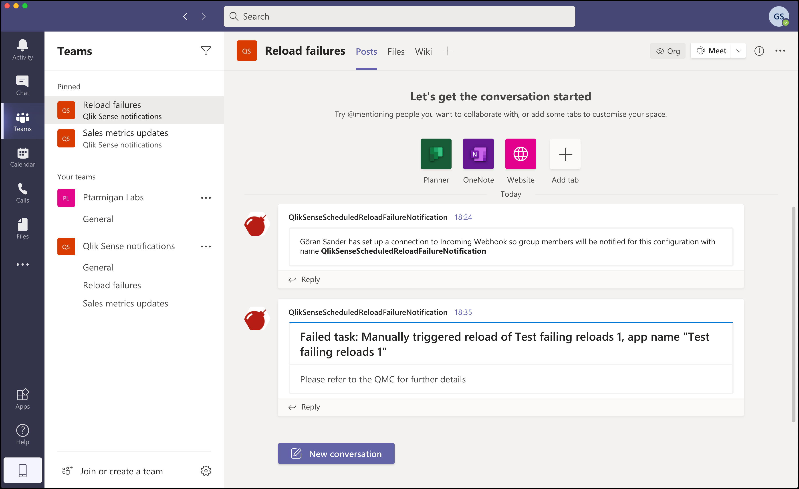

5. Notifications when app reloads fail
The Qlik Sense logging framework
Qlik Sense Enterprise on Windows uses the log4net logging framework. It can be extended with logging appenders, which is what allows you to get the notifications.
In fact, log4net appenders allows you to filter and get notified about anything written to Sense log files, but here we’ll focus on failed scheduler reloads.
Scheduled vs manual app reloads
It might not be obvious at first, but there are several kinds of reloads in Qlik Sense Enterprise:
- Reloads started from QMC. These are usually created and managed in the QMC. Quite often they are also combined into reload chains. The common thing about these reloads is that they - under the hood - are managed by Sense’s scheduling service.
- Manual reloads started from script edit. When developing apps in the standard Sense client/script editor you usually reload the apps from there. This does trigger an app reload, but not via the Sense scheduling service.
The reload failure notifications described here work by looking at log entries written by the scheduling service. When that service writes information to the logs about a failed reload, your logging appender will detect it and send an email, and/or send a UDP message to Butler - who will forward the message to Teams and/or Slack.
Email notifications
A few things are needed for this to work:
- A log appender file,
LocalLogConfig.xml, configured for sending emails over SMTP. - A Gmail account with an app password created for the purpose of sending notification emails from Sense.
The docs/log4net_task-failed directory in the GitHub repository contains a template log appender file called LocalLogConfig.xml. Copy this file to the C:\ProgramData\Qlik\Sense\Scheduler directory on the Sense server where reloads are done. If reloads are carried out on several servers you probably want to copy the file to each of those servers.

The xml file in the GitHub repo contains configuration both for sending emails, and sending UDP messages to Butler. Below the email parts are shown, but keep in mind that the file in the GitHub repo contains both email and UDP settings.
As mentioned above, the email settings are for sending emails via Gmail. If you need to tweak things or use other email services, these links might be useful:
- https://github.com/levi-turner/getting_notified_from_qliksense
- https://github.com/ChristofSchwarz/qs_log4net_appender
The above links focus soley on email notifications - nothing about real-time messages to Slack, Teams etc.
One frequently asked question is whether it’s possible to use for example app names in the email’s subject. The answer is unfortunately no.
There simply isn’t any support for dynamically set email subjects in Qlik Sense’s log4net implemetation. Technically it’s possible, but a source level change in Sense is needed - only Qlik can do this.
Here’s the XML template log appender for sending emails via Gmail:
<?xml version="1.0"?>
<configuration>
<!-- Mail appender-->
<appender name="MailAppender" type="log4net.Appender.SmtpAppender">
<filter type="log4net.Filter.StringMatchFilter">
<param name="stringToMatch" value="Message from ReloadProvider" />
</filter>
<filter type="log4net.Filter.DenyAllFilter" />
<evaluator type="log4net.Core.LevelEvaluator">
<param name="threshold" value="ERROR"/>
<!--Sets the level of logging, in this case any ERROR in the log will be sent as an email-->
</evaluator>
<param name="to" value="<email address to send failed task notification emails to>" />
<param name="from" value="<sender email address used in notification emails>" />
<param name="subject" value="Qlik Sense failed task (server <servername>)" />
<param name="smtpHost" value="smtp.gmail.com" />
<param name="port" value="587" />
<param name="EnableSsl" value="true" />
<param name="Authentication" value="Basic" />
<param name="username" value="<Gmail username>" />
<param name="password" value="<Gmail password>" />
<param name="bufferSize" value="0" /> <!-- Set this to 0 to make sure an email is sent on every error -->
<param name="lossy" value="true" />
<layout type="log4net.Layout.PatternLayout">
<param name="conversionPattern" value="%newline%date %-5level %newline%property{TaskName}%newline%property{AppName}%newline%message%newline%newline%newline" />
<!--Defined conversion pattern for the output. To be able to output custom properties in the log (example, Taskname), append %property{propertyname} to the output pattern-->
</layout>
</appender>
<!--Send mail and event to Butler on task failure-->
<logger name="System.Scheduler.Scheduler.Slave.Tasks.ReloadTask">
<!--Logger name identifies the component to monitor. This can be found by investigating the actual log file-->
<appender-ref ref="MailAppender" />
<!--appender-ref should match the name identifying the appender. More than one appender can be configured in the same configuration file-->
</logger>
</configuration>
Microsoft Teams notifications
A reload failure notification in Team looks like this:

Requirements:
- A log appender file,
LocalLogConfig.xml, configured to send UDP messages to Butler’s UDP server. - A running Butler instance with the UDP server enabled (
Butler.udpServerConfig.enablesetting in Butler config file). Make sure the UDP IP and port in the XML file and Butler’s config matches! - MS Teams notifications must be enabled in the
Butler.teamsConfig.enableproperty in the config file. - An incoming webhook defined in MS Teams. These are created per channel in Teams, so make sure to create it in the channel where notifications should appear. The
Butler.teamsConfig.taskFailureWebhookURLshould be set to the URL you get from Teams.
Slack notifications

Requirements:
- A log appender file,
LocalLogConfig.xml, configured to send UDP messages to Butler’s UDP server. - A running Butler instance with the UDP server enabled (
Butler.udpServerConfig.enablesetting in Butler config file). Make sure the UDP IP and port in the XML file and Butler’s config matches! - Slack notifications must be enabled in the
Butler.slackConfig.enableproperty in the config file. - An incoming webhook defined in Slack. While these are associated with a specific Slack channel, you can overrise the channel when posting messages. The
Butler.slackConfig.webhookURLshould be set to the URL you get from Teams. - The name of the Slack channel to which notifications should be sent.
Feedback
Was this page helpful?
Glad to hear it! Please tell us how we can improve.
Sorry to hear that. Please tell us how we can improve.